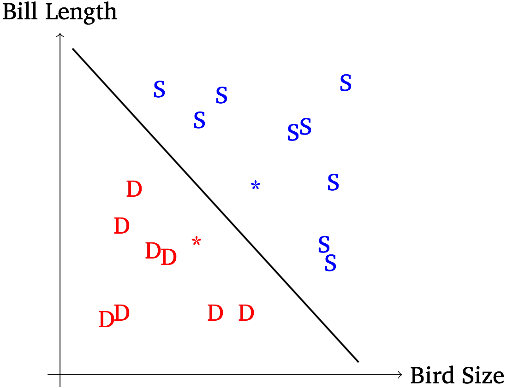

A big part of that is teaching computers about the many patterns of language
Facts about grammar, about words, about speech, about sound
We need the computer to be able to make decisions and choices based on language patterns
Is ‘recrod’ a valid word in the language being used or a typo?
Is the user using ‘record’ as a noun or a verb?
Did the user really want to write ‘duck these COVID restrictions’?
What device does the user want me to activate?
Is this a negative or positive product review?
“The list of valid English words is…”
“Unless the word ‘pond’ also occurs, don’t say ‘duck’…”
“If ‘record’ comes after a noun or pronoun, it’s probably a verb…”
“The thing after ‘Turn on the…’ is the thing you should turn on…”
What features would define a ‘bad’ review?
How does this vary across product categories?
How does this vary across languages and cultures?
We don’t want to write code that’s based on only our knowledge of the world
We don’t want to write code that’s based on only one speaker or situation
We don’t want to write code for each grammatical feature
We want our analysis to be able to change and evolve over time and adapt to different situations
We want our processing to handle a complex set of situations
1: Collect Data
2: Label Data with the classes of interest
3: Find Features in the data which might be useful
4: Train the algorithm on some of the data
5: Test the algorithm and check the predictions
6: Repeat with modifications until you’re done
What kinds of language data are used?
What is Machine Learning?
How do two common algorithms work?
What’s the workflow for Machine Learning?
A body of data used for study, analysis, or training algorithms
A listing of words in a given language, with or without additional information
Speech data (e.g. phone conversations, siri interactions, recited sentences)
Speech data are acoustic, not written words
Can include secondary data streams (e.g. stereo, voice information)
Text data (e.g. tweets, news-wire, literature, books, medical records, banks of emails)
Conversation data (e.g. scripts, transcripts, etc.)
Language resources (e.g. lexicons/dictionaries, ontologies, lexical resources)
We give the computer human-generated ‘answers’ which we want it to be able to reproduce in new data
These annotations are task specific, and very expensive to make
An annotated corpus has a bunch of raw data, and a bunch of metadata which the computer can use to learn from the raw-data
Transcriptions: “What was said here, and when?”
Structural annotations: “How does this sentence work, grammatically?”
Type or class annotations: “What kind of language is this?” or ‘Is this a noun or verb or adjective or…?’
Semantic annotations: “What does this mean?” or “Is this a positive or negative sentiment?” or “When did this happen?”
We’ll spend a lot of time talking about how this process works
You cannot build a language system without language data to work from
Your data needs to match the domain and problems you’re wanting to solve
Your system is only as good as your data
“Defenestrate”
“Herbie”
“The chair needs fixed”
Each has strengths, weaknesses, and uses
… and each presents unique challenges
That’s a Ph.D, not a single quarter
It is an art as much as a science
It’s constantly evolving
Give you simplified basics, and you’ll learn the details when you dive deeper for your tasks
I just need you to know enough to get the concept
This is going to happen a lot this quarter. That’s the point!
1: Use statistics to find useful patterns in some kind of data using a machine learning algorithm (‘Training’)
2: Use those same statistics to use those patterns to make decisions and predictions (‘Testing’)
3: Evaluate the results, make changes to the model or algorithm, and repeat!
Machine learning doesn’t deal with ‘meaning’ or ‘understanding’
It is not about ‘Artificial Intelligence’ (in any real sense)
ML is math done on data, to draw meaningful lines, which seems like learning
It is not actual human-like learning
Predictions anticipate upcoming data
“What’s the next data point likely to look like?
“What’s the next word in this sentence likely to be?”
Classifications describe the current data
“We have groups here. What group does this new point belong to?”
“Is this review positive or negative?”
We’re going to focus on classification today!
Transparent machine learning algorithms give us details about why they decided what they did
What information or ‘features’ mattered most?
How confident was the model in this decision?
Where are the boundaries?
Opaque algorithms give us little information about their decision-making process
You get input, a black box, and output
Sometimes you get confidence, but not always
Like humans, “Uh, I just know”
Research machine learning often focuses on transparency and learning as much as you can about the data and task
Engineering machine learning focuses on raw predictive power, efficiency, and accuracy
Supervised Machine Learning - We train on all the data, annotated with the patterns we’re looking for, then test and tweak.
Semi-Supervised Maching Learning - We train on a very small amount of annotated data, then test and tweak
Unsupervised Machine Learning - We give the machine unannotated data, then test and tweak
These have strengths and weaknesses
We’re going to focus on supervised machine learning today
“I’m looking at a bird. What kind of bird is it?”

No matter the data, just says “Eh, it’s a duck”
Surprisingly accurate
If 78% of waterfowl on the lake are ducks, it’s accurate 78% of the time.
If 10% of the waterfowl are ducks, it’s accurate 10% of the time.
Count the proportion of ducks in the training data, and then guess at random ‘Duck’ X percent of the time
Much more accurate when the classes are imbalanced
If only 10% are ducks, this will be much more accurate than “It’s a duck!”
… but you’ll also start making mistakes on ducks, too!
Let’s pretend to be classifiers!
“I’m looking at a bird. What kind of bird is it?”
One Approach:
Ask a question, then ask a different question based on the first one, then ask another…
If the tree is well made, we should find the answer
Often, we randomize the trees and find an ensemble of trees which gives the best results (a “Random Forest”)
Back to the waterfowl!

|

|
|---|
You are now recieving texts with bill length and body length measurements for birds
The question is “Swan, or Duck?”

Look at all the data in an n dimensional space
Try to find a hyperplane with the best separation
This hyperplane is delineated by the support vectors
Classification is just* seeing where the new data is relative to that line

SVMs have been historically very powerful
They’re a great choice for transparent machine learning
Better results
Less worrying about features
Massive complexity
Zero transparency
That’s soon!
1: Collect Data
2: Label Data with the classes of interest
3: Find Features in the data which might be useful
4: Train the algorithm on some of the data
5: Test the algorithm and check the predictions
6: Repeat with modifications until you’re done
More data is generally better
Representative data is good
Diverse data is ideal
Balance of classes is helpful
Finding the classes can be half the battle
Make boundaries between the classes clear
You want to present information that the algorithm would find useful about the data
Garbage in, garbage out
Finding features can often be a huge part of the battle.
Deep neural nets can find their own features
First, hold back a chunk of your data for testing
Present the labeled training data for the algo to learn the patterns
You’ll then have a ‘trained model’ which can be fed new data to get predictions
Feed in the ‘test’ data and get predictions, then look at the accuracy
What’s your motivation here?
Engineering: “Which algorithm works best to do the task given my constraints?”
Research: “Which features best represent the classes and provide the best information?”
Failure mode analysis tells you what your model is failing to capture, and suggests features or weaknesses in the data
Go back and change the data, labels, features, and algorithm in a way that you think will help.
Algorithms often have parameters that you can tune for better results
You’ll eventually hit a point of diminishing returns/funding and stop
What kind of data?
What kind of features?
What kind of algorithm?
What kind of testing?
What to tweak?

One of the fastest growing fields in computing and programming
This is a place where jobs are, if you like vector calculus
Every time somebody says “AI”, they just mean ML
Everybody wants their technology to be smarter
“Is this email spam, or not?”
“Is my car about to crash?”
“Should we lend this person money?”
“Is this handwritten symbol”1” or “2” or “3” or…?”
“Is this word a noun, or a verb, or an adjective, or…?”
Answering our ‘How long to get home’ query involves a series of machine learning models
Models feeding models feeding models
There are few parts of natural language processing that aren’t machine learning.
This is the ‘Deep Learning’ everybody keeps talking about
Deep neural networks are still statistical machine learning models
They don’t require any feature extraction, and they’re wildly powerful
They’re also very computationally expensive to run
… and they’re completely opaque
Machine learning is everywhere
There are many algorithms, but they all have similar basic workflows
It’s absolutely fascinating
You’ll need good language data to be able to do any of it!